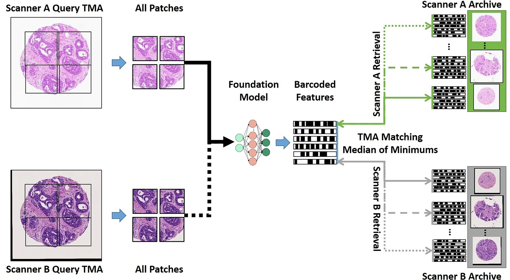

npj Imaging · 2026
Reliability of foundation models for image retrieval in histopathology
Ensuring fairness and explainability is essential for the development of ethical, reliable, and effective AI systems in healthcare. Content-Based Image Retrieval (CBIR) offers interpretable, visual tools to support diagnostic processes; however, these tools remain susceptible to biases inherent in the data. This study investigates covariate bias arising from differences in scanning devices within Foundation Models (FMs) used for CBIR in histopathology.